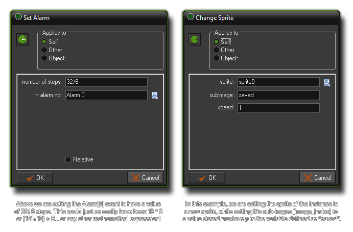

Using Expressions And Variables In Actions
This section covers how to use expressions and the in-built instance variables in actions.
When using many of the actions in GameMaker:Studio you are expected to input a value as one of the parameters, but sometimes that is not enough and you may find it necessary to input a formula or an expression to get the required result from the action. this is perfectly valid and GameMaker:Studio permits the use of any of the in-built instance variables, constants or global variables as well as the use of your own (previously defined) variables and even mathematical formula! The image below shows how this can work :  As mentioned before, GameMaker:Studio also has a great number of in-built variables that are unique to each and every instance created in a room. These instance variables are created for you automatically when you create an object and can be used, set and changed just as you would any other variable. Below is a list of all these variables :
- x : the x-coordinate of the instance in the room. Changing this will position the instance elsewhere in the room along the x-axis.
- y : the y-coordinate of the instance in the room. Changing this will position the instance elsewhere in the room along the y-axis.
- hspeed : the horizontal speed (in pixels per step) at which the instance is moving. A positive value means movement to the right and a negative value means movement to the left.
- vspeed : the vertical speed (in pixels per step) at which the instance is moving. A positive value means movement to the bottom and a negative value means movement to the top.
- direction : the current direction of motion in degrees (0-360), where 0?is right, 90?is up, 180?is left and 270?is down.
- speed : the current speed of motion in the current direction. For a "forward" motion (ie: facing the direction) this is a positive value, and for a "backwards" motion it should be negative.
- visible : this is the flag that sets an object as being visible (the draw event is performed) or invisible (the draw event is skipped).
- image_index : this variable indicates which subimage in the current sprite is currently shown. When the animation speed (image_speed, see below) is set to a value greater than 0, this variable changes each step to reflect the sub-image being shown of the animation .
- image_speed this variable indicates the speed with which the subimages are shown, with the default value being 1 (meaning 1 frame per step). If you make this value larger than 1 some subimages are skipped to make the animation faster, and conversely, if you make it lower than 1, then some sub-images are repeated over various steps to make it animate slower.
- id : the unique identifier (an integer) of the instance. This value is assigned to the instance when it is created and cannot be changed.
- object_index : this is the index (not the name) of the object that the instance has been created from. This value is assigned to the instance when it is created and cannot be changed.
Further information on in-built instance variables can be found in the following sections :
- Reference : Movement Variables
- Reference : Instance Variables
- Reference : Physics Variables
Apart from the in-built instance variables, we also have a number of global variables that can be used in actions too (see Variables And Variable Scope for more information on global variables). Here are a few of those available :